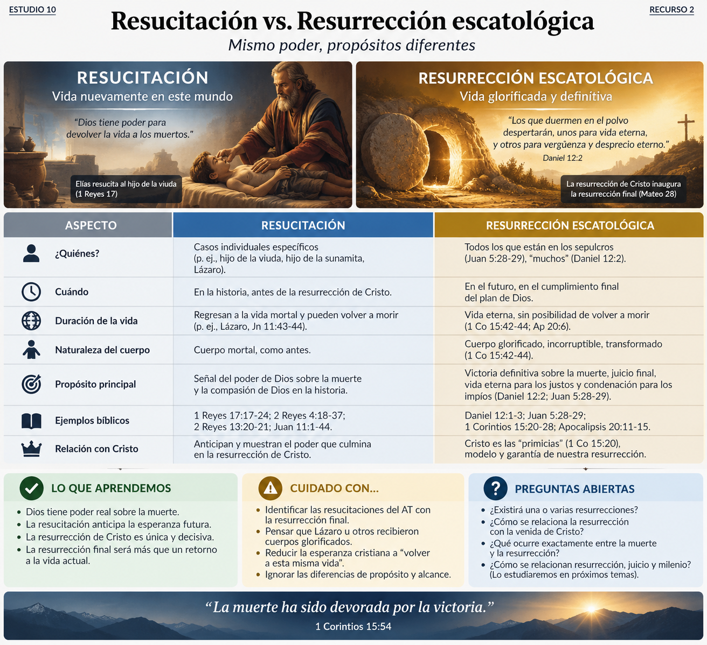
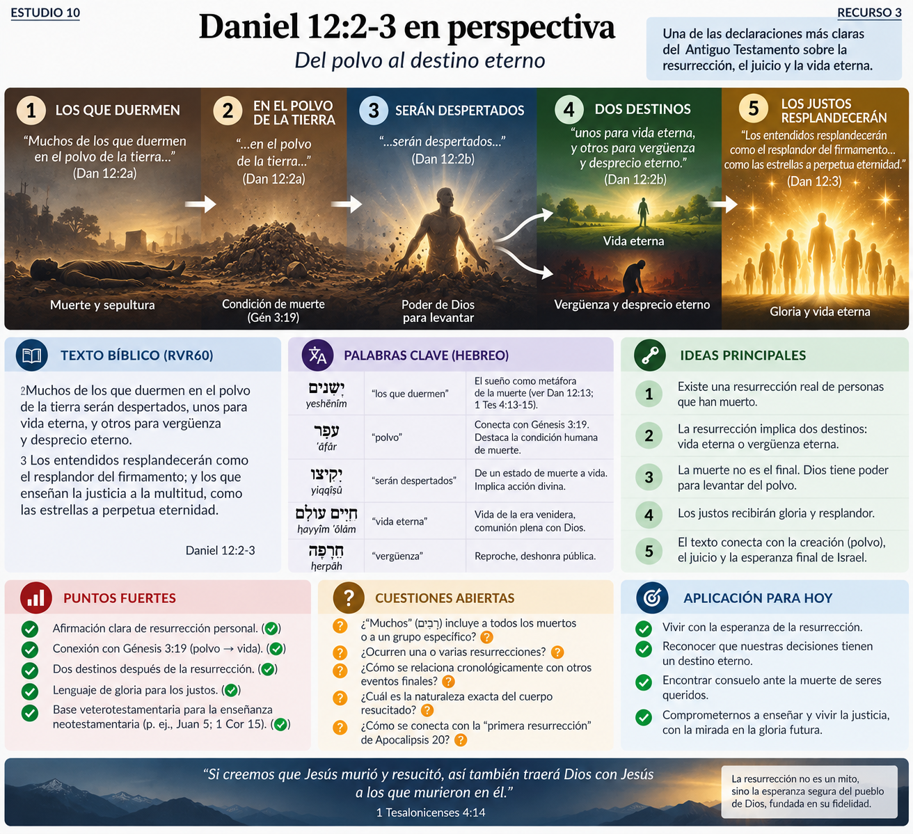
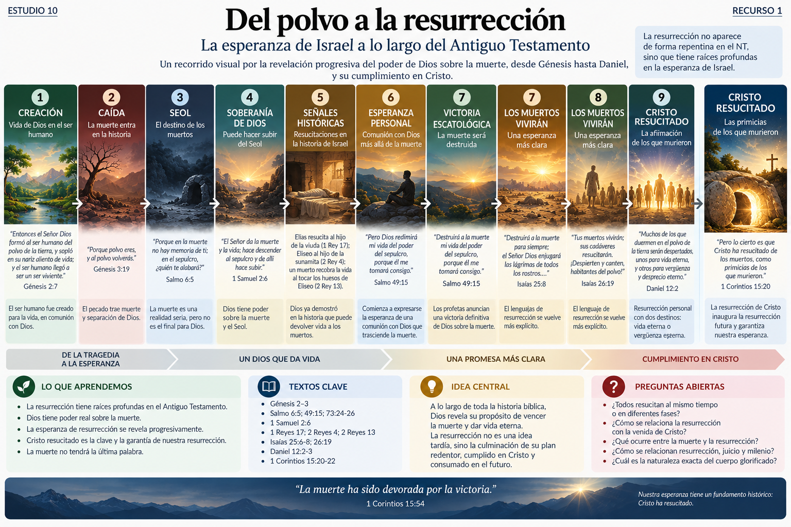
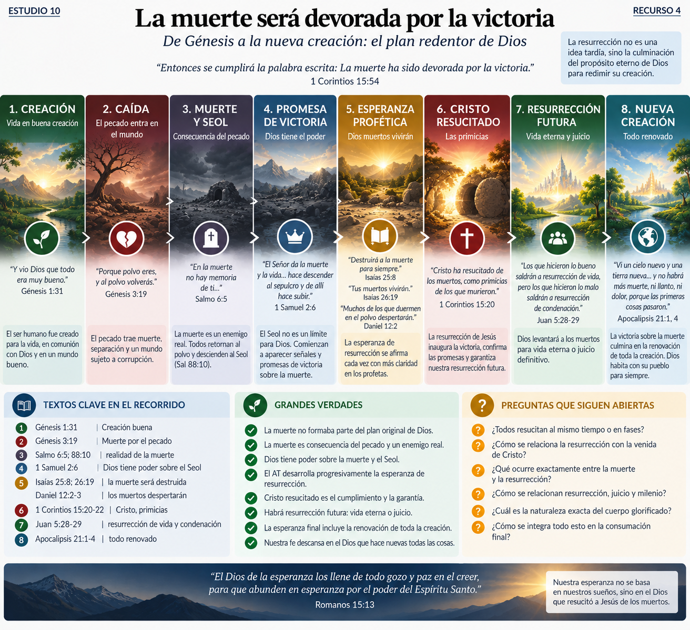

¿Esperaba realmente el Antiguo Testamento una resurrección corporal de los muertos?
Y, si la respuesta es sí:
¿cómo se fue revelando esa esperanza hasta llegar a las afirmaciones explícitas de Daniel 12?
Este estudio es especialmente importante porque la resurrección no aparece de golpe en el Nuevo Testamento. La victoria de Cristo sobre la muerte tiene raíces profundas en la esperanza de Israel.
Tesis provisional: 🟢 El AT desarrolla progresivamente una esperanza de victoria divina sobre la muerte que culmina, dentro del propio AT, en una afirmación inequívoca de resurrección personal en Daniel 12:2-3. Sin embargo, no todos los textos anteriores que hablan de restauración, despertar o volver a vivir deben interpretarse automáticamente como profecías directas de la resurrección final.
Antes de buscar textos sobre resurrección debemos comprender cómo describe el AT la muerte.
Dios advierte a Adán:
«...porque el día que comas de él, ciertamente morirás.» — Génesis 2:17
Después de la caída:
«...porque polvo eres, y al polvo volverás.» — Génesis 3:19
Aquí aparece una estructura fundamental:
humanidad → polvo → vida recibida de Dios → pecado → muerte → regreso al polvo
La muerte no se presenta simplemente como un proceso biológico neutral. Dentro de la narrativa de Génesis 2–3 está vinculada con la ruptura provocada por el pecado.
🟢 Muy fuerte: la muerte constituye un enemigo dentro de la historia bíblica de la caída.
Pero Génesis 3 todavía no explica explícitamente la resurrección futura.
Eso será revelado progresivamente.
Una palabra fundamental es:
Generalmente designa el ámbito o condición de los muertos.
Por ejemplo:
«Porque en la muerte no hay memoria de ti; en el sepulcro, ¿quién te alabará?» — Salmo 6:5
También:
«¿Harás maravillas con los muertos? ¿Se levantarán los muertos para alabarte?» — Salmo 88:10
Muchos textos expresan la muerte desde la perspectiva de quien ha sido separado de la vida activa entre los vivientes.
Por eso el Seol aparece asociado con:
El AT no presenta en cada texto una doctrina sistemática completa del estado intermedio.
🔴 Sería especulativo construir una geografía detallada del mundo de los muertos simplemente a partir de imágenes poéticas del Seol.
Lo importante para nuestro estudio es otra cosa:
¿puede el poder de YHWH alcanzar incluso allí?
La respuesta comienza a abrir la puerta hacia la esperanza.
Ana declara:
«El Señor da la muerte y la vida; hace descender al sepulcro y de allí hace subir.»
En hebreo la estructura es extraordinariamente fuerte:
YHWH hace morir → YHWH hace vivir hace descender al Seol → hace subir
Esto todavía puede entenderse como lenguaje sobre situaciones de peligro mortal y restauración.
Por eso debemos ser prudentes.
🟡 Probable: el texto no enseña todavía explícitamente la resurrección escatológica.
Pero establece un principio teológico decisivo:
🟢 Muy fuerte: el Seol no constituye un límite para la soberanía de YHWH.
La muerte no posee la última palabra frente al Dios de Israel.
Esto será fundamental para el desarrollo posterior.
Aquí ocurre algo nuevo.
Muere el hijo de la viuda de Sarepta.
Elías clama a YHWH:
«Señor, Dios mío, te ruego que le devuelvas la vida a este niño.»
Y el relato continúa:
«El Señor escuchó la oración de Elías, y el niño volvió a la vida.»
Tenemos una auténtica restauración de una persona muerta a la vida.
Algo semejante ocurre con el hijo de la sunamita mediante Eliseo.
Y nuevamente en:
Un cadáver toca los huesos de Eliseo:
«...el muerto recobró la vida y se puso de pie.»
Estos acontecimientos demuestran algo importantísimo.
🟢 Muy fuerte: para la teología narrativa del AT, YHWH posee poder real para devolver vida a los muertos.
Pero debemos distinguir:
Estos hombres regresaron a la vida mortal.
El texto no dice que recibieran cuerpos incorruptibles ni que hubieran vencido definitivamente la muerte.
Por tanto:
🟢 son antecedentes reales del poder de Dios sobre la muerte.
🟠 sería excesivo identificarlos con la resurrección final.
Funcionan como señales narrativas de que la muerte no es irreversible para Dios.

Llegamos a uno de los textos más famosos y difíciles.
Job declara:
«Yo sé que mi Redentor vive...»
El hebreo utiliza:
Puede significar:
redentor / vindicador / pariente defensor
Job espera que finalmente exista alguien que reivindique su causa.
Después viene la parte complicada:
«Y después de deshecha esta mi piel, en mi carne he de ver a Dios...»
Las dificultades textuales y sintácticas son reales.
Las traducciones difieren considerablemente.
Job estaría afirmando que después de morir será levantado corporalmente y verá a Dios.
🟡 Posible.
Job estaría esperando que Dios lo reivindique todavía durante su vida.
También tiene argumentos contextuales.
Job expresa una esperanza de encontrarse personalmente con Dios más allá de su destrucción física, sin formular todavía una doctrina desarrollada de resurrección.
🟡 Esta lectura parece especialmente prudente.
🟠 Disputado: Job 19 no debería utilizarse como prueba principal de la doctrina veterotestamentaria de la resurrección.
Puede apuntar hacia ella, pero Daniel 12 será muchísimo más claro.
❓ Pregunta abierta: hasta qué punto Job comprende esa vindicación como corporal y post mortem.
Aquí encontramos un desarrollo fascinante.
«Por eso mi corazón se alegra... porque no dejarás mi alma en el sepulcro, ni permitirás que tu santo vea corrupción.»
En su contexto original, el salmista expresa confianza en que Dios no lo abandonará a la muerte.
La pregunta es:
¿habla directamente de resurrección futura?
En el contexto inmediato puede referirse a preservación de la muerte.
Pero el NT aplica este salmo decisivamente a Cristo.
Pedro argumentará en Hechos 2 que David murió y fue sepultado, mientras que Jesús no permaneció en la tumba.
Esto produce una importante distinción hermenéutica:
🟢 El NT interpreta el Salmo 16 cristológicamente en relación con la resurrección de Jesús.
🟠 Eso no significa necesariamente que cada detalle tuviera que haber sido comprendido por David como una predicción explícita y exhaustiva del evento pascual.
Este texto es todavía más sugerente.
«Pero Dios redimirá mi vida del poder del sepulcro, porque él me tomará consigo.»
Aquí encontramos dos ideas:
Dios redimirá Dios me tomará
El contraste es con quienes confían en las riquezas pero inevitablemente mueren.
La riqueza no puede rescatar.
Dios sí.
🟡 Probable: el salmista expresa una esperanza que trasciende la mera prosperidad terrenal y apunta hacia una comunión con Dios que la muerte no puede finalmente destruir.
¿Es ya una doctrina explícita de resurrección corporal?
No.
Pero el horizonte está ampliándose.
El salmista declara:
«Con todo, yo siempre estuve contigo...»
y después:
«Me has guiado según tu consejo, y al final me recibirás en gloria.»
Más adelante:
«Aunque mi cuerpo y mi corazón desfallecen, Dios es la roca de mi corazón y mi porción para siempre.»
El problema del salmo es precisamente que los impíos parecen prosperar mientras los justos sufren.
Si toda la esperanza terminara exclusivamente en esta vida, la crisis sería profunda.
Pero el salmista descubre que su bien supremo no consiste simplemente en prosperidad:
Dios mismo es su porción.
🟡 Es probable que aquí exista una esperanza de comunión con Dios que supera la muerte.
Pero nuevamente:
🟠 no tenemos todavía una descripción explícita de resurrección corporal.
La revelación avanza.
Dos relatos resultan relevantes.
«Enoc anduvo con Dios, y desapareció, porque Dios se lo llevó.»
Elías es llevado en un torbellino.
Estos textos muestran que la muerte ordinaria no constituye una barrera absoluta para la comunión con Dios.
Pero:
🔴 no debemos convertir automáticamente estos relatos excepcionales en una doctrina completa del estado de todos los justos después de morir.
Son excepciones narrativas.
Su contribución es más limitada:
🟢 Dios tiene autoridad soberana sobre la frontera entre vida y muerte.
Aquí ocurre un salto enorme.
Dentro de una visión de salvación escatológica, YHWH prepara un banquete para los pueblos.
Entonces:
«Destruirá a la muerte para siempre; el Señor Dios enjugará las lágrimas de todos los rostros...»
Esta afirmación es extraordinaria.
La esperanza bíblica ya no consiste simplemente en:
Dios puede salvarme de morir.
Ahora aparece:
Dios destruirá la muerte misma.
🟢 Muy fuerte: Isaías contempla una victoria escatológica y definitiva de Dios sobre la muerte.
El NT recogerá directamente esta esperanza.
Pablo escribe:
«Entonces se cumplirá la palabra escrita: “La muerte ha sido devorada por la victoria”.» — 1 Corintios 15:54
Por tanto tenemos una línea clara:
Isaías 25 → 1 Corintios 15 → resurrección
La resurrección cristiana no constituye una idea griega añadida posteriormente.
Forma parte de la culminación de la esperanza profética de Israel.
Ahora llegamos a uno de los textos decisivos.
«Tus muertos vivirán; sus cadáveres resucitarán. ¡Despierten y canten, habitantes del polvo!...»
Aquí aparece:
vivirán
Y:
de קוּם (qum)
levantarse / ponerse en pie
Además:
«habitantes del polvo»
La imagen recuerda directamente la condición humana de Génesis 3:19.
polvo → muerte
Pero ahora:
polvo → despertar → vida
Aquí debemos respetar el debate.
Los profetas pueden utilizar lenguaje de vida y muerte metafóricamente para describir naciones.
Por eso existen dos interpretaciones principales.
Los muertos representarían al pueblo derrotado que Dios restaura.
El lenguaje describe muertos reales que vuelven a vivir.
El vocabulario:
«Tus muertos vivirán» «sus cadáveres resucitarán» «habitantes del polvo»
favorece seriamente una referencia a muertos reales.
🟢 Muy fuerte: Isaías 26:19 constituye uno de los testimonios veterotestamentarios más claros de esperanza de resurrección.
🟡 Puede existir simultáneamente una dimensión corporativa relacionada con la restauración del pueblo de Dios.
No necesitamos elegir artificialmente entre individuo y comunidad si el contexto permite ambas dimensiones.
Probablemente sea la imagen de resurrección más famosa del AT.
Ezequiel contempla:
«...muchísimos huesos sobre la superficie del valle, y estaban completamente secos.»
Dios pregunta:
«Hijo de hombre, ¿podrán vivir estos huesos?»
Ezequiel responde:
«Señor Dios, tú lo sabes.»
Después ocurre una reconstrucción:
huesos → tendones → carne → piel → aliento → vida
La imagen parece una resurrección corporal.
Pero aquí debemos dejar que el propio texto interprete la visión.
«Hijo de hombre, todos estos huesos son la casa de Israel.»
Y ellos dicen:
«Nuestros huesos se secaron, nuestra esperanza murió...»
Por tanto:
🟢 Muy fuerte: el significado inmediato de la visión es la restauración nacional de Israel desde una condición comparable a la muerte.
No exactamente.
Aquí necesitamos precisión.
🟢 Restauración de Israel.
🟢 Resurrección corporal.
Para comunicar que puede restaurar una nación aparentemente muerta, Dios utiliza precisamente la imagen de cuerpos reconstruidos y vivificados.
Esto demuestra que el concepto de devolver vida a cuerpos muertos era inteligible dentro del horizonte profético.
Pero sería incorrecto afirmar:
«Ezequiel 37 es simplemente una profecía directa de la resurrección general.»
🟠 Eso ignora la explicación explícita de 37:11.
Una formulación mejor sería:
Ezequiel 37 utiliza una impresionante imagen de resurrección para anunciar la restauración de Israel, y esa imagen contribuye al mundo conceptual bíblico dentro del cual se desarrolla la esperanza de resurrección.
Israel declara:
«Vengan, volvamos al Señor... después de dos días nos dará vida; al tercer día nos levantará...»
¿Es una profecía directa de la resurrección de Jesús al tercer día?
Debemos tener cuidado.
El sujeto es plural:
nos dará vida nos levantará
El contexto trata principalmente de Israel.
Por tanto:
🟢 El sentido inmediato se relaciona con restauración del pueblo.
🔴 Afirmar que Oseas 6:2 constituye por sí mismo una predicción directa y exclusiva de que Jesús resucitaría exactamente al tercer día sería demasiado fuerte.
Sin embargo, existe una conexión bíblico-teológica posible entre:
Israel → muerte/restauración → tercer día → Mesías representativo de Israel.
🟠 Pero debe presentarse como conexión tipológica discutida, no como significado explícito del versículo.
Aquí encontramos otro texto decisivo.
YHWH habla del poder del Seol y de la muerte.
El hebreo permite dificultades interpretativas y las traducciones varían: puede leerse como promesa de rescate o, en contexto, como convocatoria del poder de la muerte para juicio.
Por eso:
🟠 Oseas 13:14 en su contexto inmediato es interpretativamente complejo.
Pero ocurre algo fundamental posteriormente.
Pablo escribe:
«¿Dónde está, muerte, tu victoria? ¿Dónde está, sepulcro, tu aguijón?» — 1 Corintios 15:55
Pablo incorpora el lenguaje de Oseas dentro de su proclamación de la victoria escatológica mediante la resurrección.
Así:
Oseas 13 + Isaías 25 → 1 Corintios 15
Pablo lee la resurrección de los creyentes como culminación de la victoria prometida por Dios sobre muerte y Seol.
Finalmente llegamos al pasaje más explícito.
Daniel contempla un período de angustia incomparable.
Después:
«Muchos de los que duermen en el polvo de la tierra serán despertados, unos para vida eterna, y otros para vergüenza y desprecio eterno.»
Aquí prácticamente desaparece la ambigüedad presente en textos anteriores.
Analicemos cuidadosamente.
Daniel utiliza el sueño como metáfora de la muerte.
No significa necesariamente que el texto esté definiendo técnicamente el estado consciente o inconsciente del muerto.
La metáfora enfatiza algo diferente:
quien duerme puede despertar.
La muerte aparece como un estado del cual Dios puede levantar.
Por tanto:
🔴 No debemos utilizar solamente la palabra «dormir» para demostrar una doctrina completa del estado intermedio.
Ese no es el objetivo principal del texto.
Daniel 12 conecta sorprendentemente con Génesis.
«polvo eres y al polvo volverás»
«los que duermen en el polvo... despertarán»
La trayectoria bíblica queda así:
creación → polvo caída → regreso al polvo resurrección → despertar del polvo
🟢 Muy fuerte: Daniel describe una reversión de la condición de muerte asociada con el polvo.
Esto favorece claramente una resurrección corporal y no simplemente supervivencia espiritual.
Daniel añade algo nuevo:
«...unos para vida eterna, y otros para vergüenza y desprecio eterno.»
Aquí tenemos dos destinos.
vida eterna
vergüenza y desprecio eterno
Por tanto:
🟢 Muy fuerte: la resurrección en Daniel está relacionada con juicio escatológico.
No solamente los justos aparecen en el horizonte.
También existe una resurrección vinculada al juicio.
Esto será extremadamente importante para comprender posteriormente:
Pero todavía no debemos decidir cómo se relacionan cronológicamente esos textos.
Eso corresponde a estudios posteriores.
Daniel dice:
«Muchos de los que duermen...»
¿Significa que solamente algunos muertos resucitarán?
La palabra hebrea:
significa literalmente «muchos».
Pero dependiendo del contexto puede funcionar para describir una multitud o colectividad sin necesariamente contraponerla a otros que nunca resucitarán.
Tenemos varias posibilidades:
Solo determinados muertos están contemplados.
El término abarcaría colectivamente a los muertos relevantes al juicio descrito.
🟠 Disputado.
No deberíamos construir toda la doctrina de la extensión de la resurrección solamente sobre rabbim.
El NT aportará mayor claridad.

Daniel continúa:
«Los entendidos resplandecerán como el resplandor del firmamento; y los que enseñan la justicia a la multitud, como las estrellas a perpetua eternidad.»
Ahora la resurrección no es simplemente:
volver a la existencia anterior.
Existe una dimensión de gloria.
Los justos:
despiertan → reciben vida eterna → resplandecen
Esto anticipa conceptos que serán desarrollados enormemente en el NT.
Comparemos posteriormente:
«Entonces los justos resplandecerán como el sol en el reino de su Padre.» — Mateo 13:43
Jesús utiliza lenguaje claramente relacionado con Daniel.
Y Pablo describirá el cuerpo resucitado en términos de:
incorrupción, gloria y poder (1 Corintios 15:42-44).
Ahora podemos visualizar el movimiento.
No tenemos una doctrina completa de resurrección desde Génesis.
Tenemos revelación progresiva.
Génesis 3
Humanidad → muerte → polvo.
1 Samuel 2
YHWH hace descender al Seol y puede hacer subir.

1–2 Reyes
Dios devuelve vida a muertos concretos.
Salmos / posiblemente Job
La comunión con Dios comienza a ser vista como más fuerte que la muerte.
Isaías 25
Dios destruirá la muerte.
Isaías 26
Los habitantes del polvo despiertan.
Ezequiel 37
La restauración nacional es representada mediante cuerpos que vuelven a vivir.
Daniel 12
Los muertos despiertan para:
vida eterna / vergüenza eterna.
Ese desarrollo es extraordinariamente coherente.
Esto merece atención.
En buena parte del pensamiento griego antiguo podía existir esperanza de inmortalidad del alma, pero el cuerpo frecuentemente era considerado inferior.
La esperanza bíblica es diferente.
No consiste simplemente en:
«el alma escapa del cuerpo».
Daniel habla de personas:
durmiendo en el polvo → despertando.
Isaías habla de:
cadáveres levantándose.
La esperanza bíblica se dirige hacia la victoria sobre la muerte, no simplemente hacia la supervivencia de una parte del ser humano.
🟢 Muy fuerte: la resurrección corporal tiene raíces profundamente judías y veterotestamentarias.
Esto será esencial cuando lleguemos a 1 Corintios 15.
Ahora podemos cruzar hacia el NT.
Jesús dice:
«...vendrá la hora cuando todos los que están en los sepulcros oirán su voz; y los que hicieron lo bueno saldrán a resurrección de vida, pero los que hicieron lo malo saldrán a resurrección de condenación.»
Comparemos:
despertarán
→ vida eterna → vergüenza eterna
saldrán
→ resurrección de vida → resurrección de condenación
🟢 Muy fuerte: Jesús enseña dentro de la misma estructura escatológica fundamental que Daniel.
Y añade algo impresionante:
los muertos escucharán la voz del Hijo.
La autoridad divina sobre la muerte queda vinculada directamente con Jesús.
Cuando muere Lázaro, Jesús dice:
«Tu hermano resucitará.»
Marta responde:
«Yo sé que resucitará en la resurrección, en el día final.» — Juan 11:23-24
Esto demuestra que para ciertos judíos del siglo I la esperanza veterotestamentaria había producido una expectativa reconocible:
habrá una resurrección futura en el último día.
Jesús no corrige esa esperanza.
La profundiza radicalmente:
«Yo soy la resurrección y la vida.»
Aquí la escatología se vuelve explícitamente cristocéntrica.
La resurrección no es simplemente un acontecimiento futuro.
Está ligada a una Persona.
Los evangelios muestran que no todos los judíos aceptaban esta doctrina.
Los saduceos negaban la resurrección.
Los fariseos la afirmaban.
Esto aparece claramente también en Hechos 23:6-8.
Pero Jesús responde a los saduceos utilizando incluso la Torá:
«Yo soy el Dios de Abraham, el Dios de Isaac y el Dios de Jacob.»
Y concluye:
«Dios no es Dios de muertos, sino de vivos.»
Jesús no abandona el AT para defender la resurrección.
Argumenta desde las Escrituras de Israel.
Esto confirma que la doctrina cristiana de la resurrección se entiende como cumplimiento de la esperanza bíblica anterior.
Llegamos a una afirmación decisiva.
Pablo declara que Cristo:
murió por nuestros pecados conforme a las Escrituras, fue sepultado, y resucitó al tercer día conforme a las Escrituras.
No necesariamente debemos buscar un único versículo que diga literalmente:
«El Mesías resucitará exactamente al tercer día.»
Probablemente Pablo está pensando en el patrón global de las Escrituras y posiblemente en textos específicos que convergen.
Entre ellos pueden estar:
🟡 Probablemente «según las Escrituras» posee una dimensión canónica más amplia que una simple cita de un único texto.
Pablo no presenta la resurrección de Jesús como un milagro aislado.
«Pero lo cierto es que Cristo ha resucitado de los muertos, como primicias de los que murieron.»
primicias
Las primicias eran la primera parte de la cosecha que anticipaba el resto.
Por tanto:
resurrección de Cristo → comienzo de la cosecha
No simplemente:
Jesús volvió a vivir.
Sino:
la resurrección futura ya comenzó en Jesús.
🟢 Esta es una de las afirmaciones escatológicas más importantes del NT.
Pablo conecta la resurrección con Génesis:
«Pues así como en Adán todos mueren, también en Cristo todos serán vivificados.» — 1 Corintios 15:22
Ahora vemos el arco completo:
Adán → pecado → muerte → polvo
polvo → despertar
Cristo → resurrección
Cristo resucitado → primicias → resurrección de los suyos
La resurrección aparece como reversión escatológica de la muerte adámica.
Esta distinción será fundamental para todo nuestro curso.
El NT puede hablar del creyente estando con Cristo después de morir.
Pero eso no elimina la esperanza de resurrección.
La esperanza final bíblica no puede reducirse a:
«morir e ir al cielo».
Porque todavía queda un enemigo:
la muerte corporal.
La victoria definitiva ocurre cuando:
«...este cuerpo corruptible se vista de incorrupción, y este cuerpo mortal se vista de inmortalidad.»
Entonces:
«La muerte ha sido devorada por la victoria.»
La esperanza cristiana completa incluye:
muerte → presencia con Cristo / estado intermedio → resurrección corporal → victoria definitiva sobre la muerte.
La naturaleza exacta del estado intermedio deberá estudiarse separadamente.
❓ No debemos rellenarla aquí antes de analizar sus textos.
Esto también prepara algo enorme que veremos más adelante.
Si la salvación final consistiera simplemente en abandonar definitivamente la creación física, la resurrección corporal sería extraña.
Pero si Dios pretende redimir su creación, entonces la resurrección tiene perfecto sentido.
Dios no responde al pecado diciendo:
«abandono mi creación».
La respuesta bíblica culmina en:
redención.
Esto conecta la resurrección con:
Pero todavía debemos estudiar esas conexiones cuidadosamente antes de determinar todos sus detalles.
Aquí debemos deliberadamente detenernos.
Daniel 12 presenta:
resurrección → vida / juicio
Juan 5 presenta:
resurrección de vida / resurrección de condenación
Pero otros textos, especialmente Apocalipsis 20, introducirán preguntas cronológicas.
Los sistemas escatológicos responden de diferentes maneras.
Generalmente distingue temporalmente determinadas resurrecciones.
Generalmente entiende una resurrección general al final, aunque debe explicar la «primera resurrección» de Apocalipsis 20 de otra manera.
Normalmente comparte una estructura semejante al amilenialismo respecto de la resurrección final, aunque difiere respecto al desarrollo histórico del reino.
Pero sería prematuro decidir aquí.
❓ Pregunta abierta del Mapa Escatológico:
¿Existe una única resurrección general simultánea o diferentes fases cronológicas de resurrección?
Daniel 12 por sí solo no resuelve completamente esa cuestión.
La dejaremos abierta hasta estudiar:
El AT tampoco desarrolla una anatomía del cuerpo resucitado.
Daniel aporta:
despertar + vida eterna + gloria
Pero Pablo desarrollará mucho más:
«Se siembra en corrupción, resucitará en incorrupción. Se siembra en deshonra, resucitará en gloria. Se siembra en debilidad, resucitará en poder.»
Esto significa que existe:
Es la persona que murió quien resucita.
Pero también:
No simplemente vuelve a la misma condición mortal.
Lázaro fue restaurado a vida mortal.
Jesús resucitado inaugura otra realidad:
vida corporal que ha atravesado y vencido definitivamente la muerte.
Aquí llegamos al centro teológico del estudio.
El AT desarrolla una pregunta:
¿puede la muerte separar definitivamente al pueblo de Dios de su Dios?
La respuesta progresa:
YHWH domina el Seol.
↓
YHWH puede devolver vida.
↓
YHWH destruirá la muerte.
↓
los muertos vivirán.
↓
los que duermen en el polvo despertarán.
↓
Entonces llega Jesús.
Y declara:
«Yo soy la resurrección y la vida.»
La esperanza deja de ser solamente una promesa futura.
Tiene rostro.
Cristo mismo es la garantía de la resurrección.

Podemos clasificar lo estudiado:
El AT contiene una esperanza real de victoria divina sobre la muerte.
Isaías 25 anuncia la destrucción definitiva de la muerte.
Daniel 12 enseña resurrección personal vinculada con vida eterna y juicio.
La resurrección cristiana tiene profundas raíces veterotestamentarias.
El NT presenta la resurrección de Jesús como cumplimiento de esa esperanza.
La resurrección de Cristo constituye las «primicias» de una resurrección futura.
Isaías 26:19 habla de resurrección corporal real dentro de un horizonte escatológico.
Salmos 49 y 73 reflejan una esperanza de comunión con Dios que trasciende la muerte.
Job 19 constituye una afirmación explícita de resurrección corporal.
Oseas 6:2 funciona como profecía mesiánica directa de la resurrección al tercer día.
El alcance exacto de «muchos» en Daniel 12:2.
Construir una cronología completa de varias resurrecciones únicamente desde Daniel 12.
Utilizar las imágenes del Seol para elaborar una geografía detallada del más allá que los propios textos no explican.
Después de recorrer el AT podemos responder la pregunta inicial.
Sí.
Pero mediante revelación progresiva.
Los primeros textos establecen la realidad de la muerte y la soberanía divina sobre ella.
Las narraciones de Elías y Eliseo muestran que Dios puede devolver vida.
Los Salmos comienzan a expresar una esperanza de comunión con Dios más poderosa que el Seol.
Isaías anuncia algo extraordinariamente mayor:
Dios destruirá la muerte.
Después:
«Tus muertos vivirán.»
Ezequiel utiliza la resurrección como poderosa imagen de restauración nacional.
Y finalmente Daniel declara:
los que duermen en el polvo despertarán.
Algunos:
para vida eterna.
Otros:
para vergüenza eterna.
Entonces el NT anuncia que algo inesperado ha sucedido antes de la consumación:
uno ya ha resucitado.
Jesucristo.
No simplemente como excepción.
Sino como:
«primicias de los que murieron».
Por eso la esperanza cristiana no consiste fundamentalmente en escapar de la muerte como almas incorpóreas.
Consiste en que Dios vencerá la muerte.
Y la evidencia anticipada de esa victoria ya existe:
la tumba de Cristo quedó vacía.
Este estudio nos permite añadir con bastante seguridad:
CREACIÓN ↓ CAÍDA ↓ MUERTE / POLVO ↓ SEOL ↓ Promesa de victoria sobre la muerte ↓ RESURRECCIÓN DE CRISTO — PRIMICIAS ↓ Resurrección futura ↓ Vida eterna / juicio ↓ ❓ Relación cronológica exacta entre las resurrecciones y los demás acontecimientos finales ↓ ❓ Consumación / nueva creación
🟢 La muerte no tiene la última palabra.
🟢 Existirá resurrección corporal.
🟢 Habrá vida eterna para los justos.
🟢 Existe también resurrección relacionada con juicio.
🟢 Cristo ya ha inaugurado la victoria escatológica mediante su propia resurrección.
❓ ¿Todos resucitan exactamente al mismo tiempo?
❓ ¿Cómo se relaciona la resurrección con la venida de Cristo?
❓ ¿Cómo encaja la «primera resurrección» de Apocalipsis 20?
❓ ¿Qué ocurre entre muerte y resurrección?
❓ ¿Cómo se relacionan resurrección, juicio y milenio?
❓ ¿Cuál es exactamente la naturaleza del cuerpo glorificado?
No conviene responder esas preguntas desde un sistema todavía. Los próximos textos deberán ir cerrando —o manteniendo abiertos— esos espacios.
Para convertir este capítulo posteriormente en contenido web, veo cuatro recursos realmente útiles: (1) una línea de revelación progresiva «Del polvo a la resurrección», desde Génesis 3 hasta Daniel 12 y Cristo; (2) un gráfico comparativo «Resucitación vs. resurrección escatológica», contrastando los milagros de Elías/Eliseo y Lázaro con Cristo y la resurrección futura; (3) un mapa textual de Daniel 12:2-3 mostrando polvo → despertar → dos destinos → gloria; y (4) una infografía cristocéntrica «La muerte será devorada», conectando Génesis 3 → Isaías 25–26 → Daniel 12 → resurrección de Cristo → 1 Corintios 15.
Empezaría por el recurso 1, porque visualmente resume todo el argumento exegético del estudio sin cerrar ninguna de las cuestiones cronológicas que todavía tenemos marcadas con ❓.